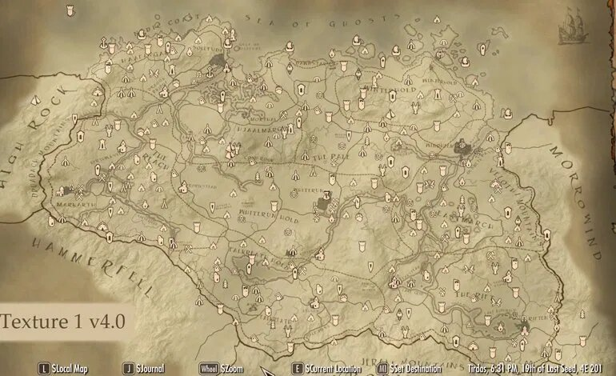
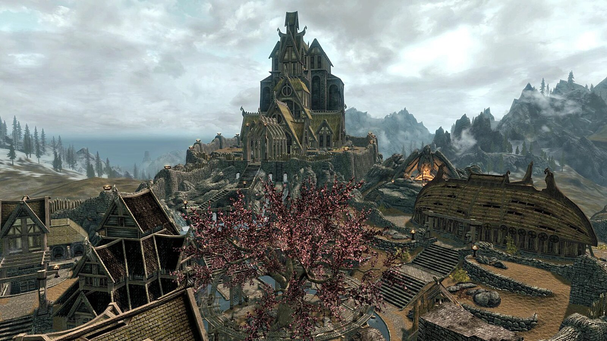
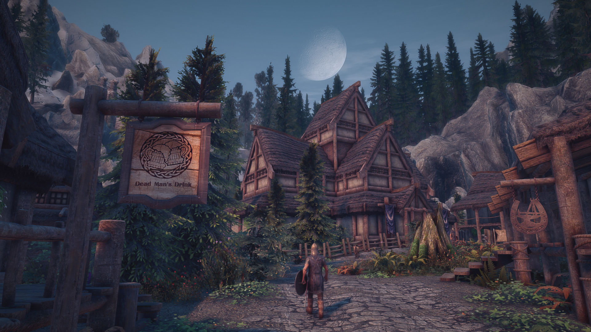
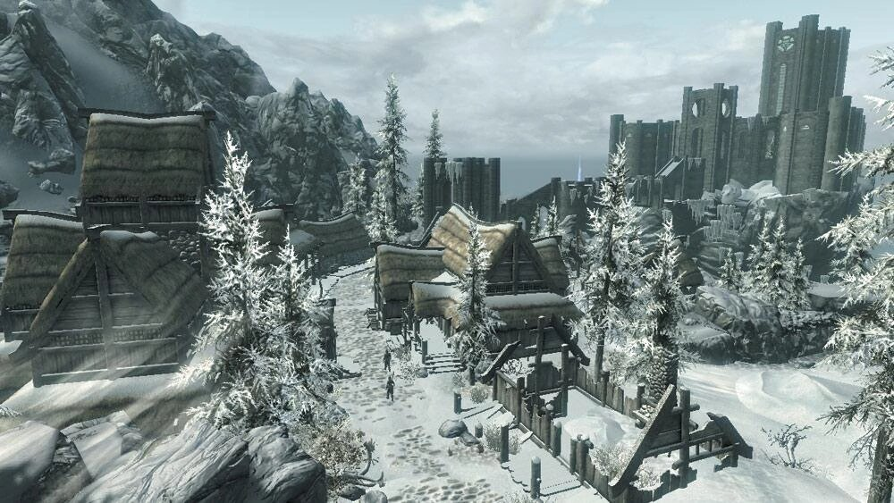
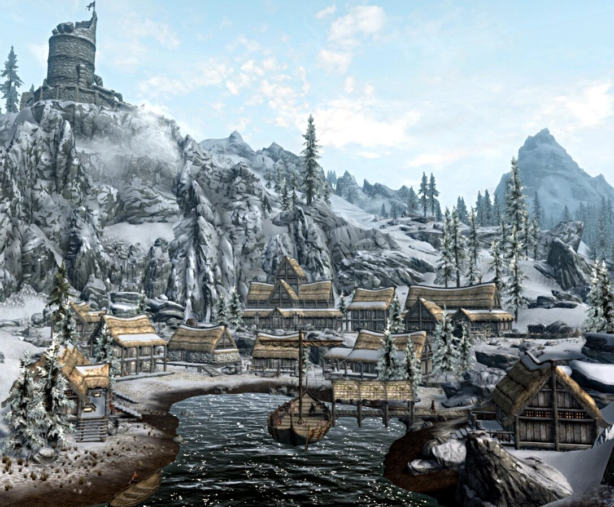
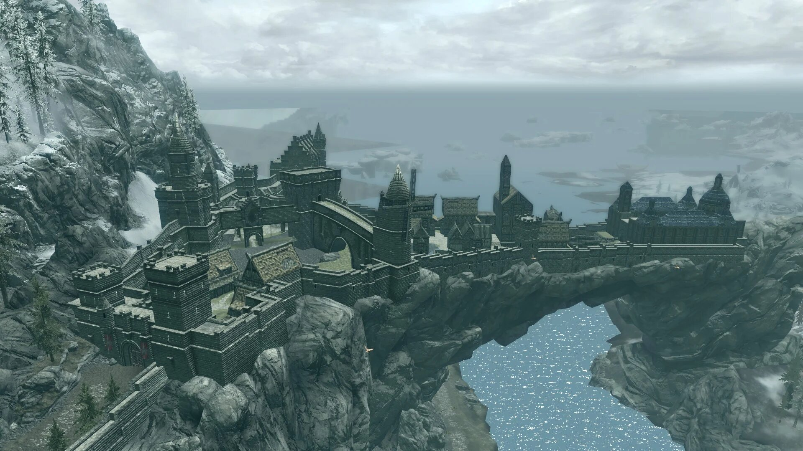
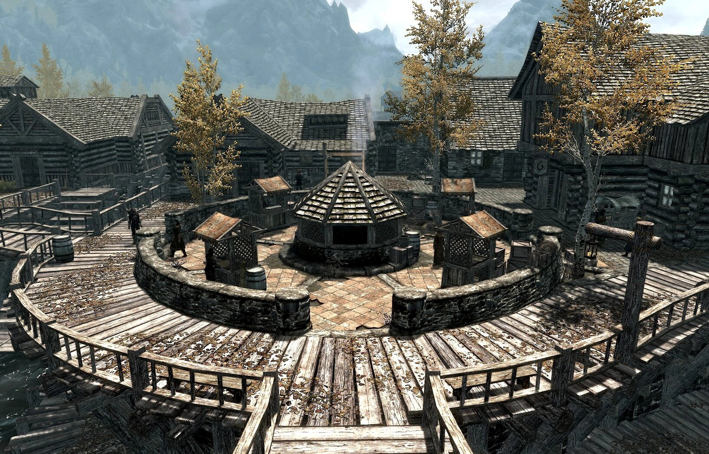
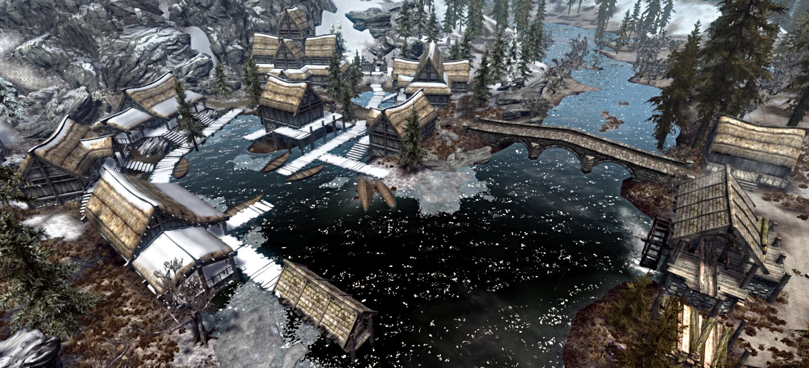
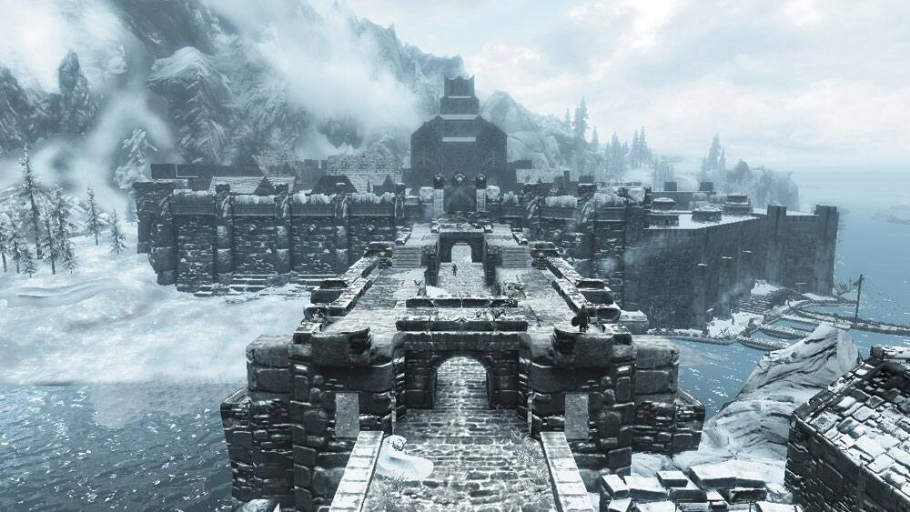
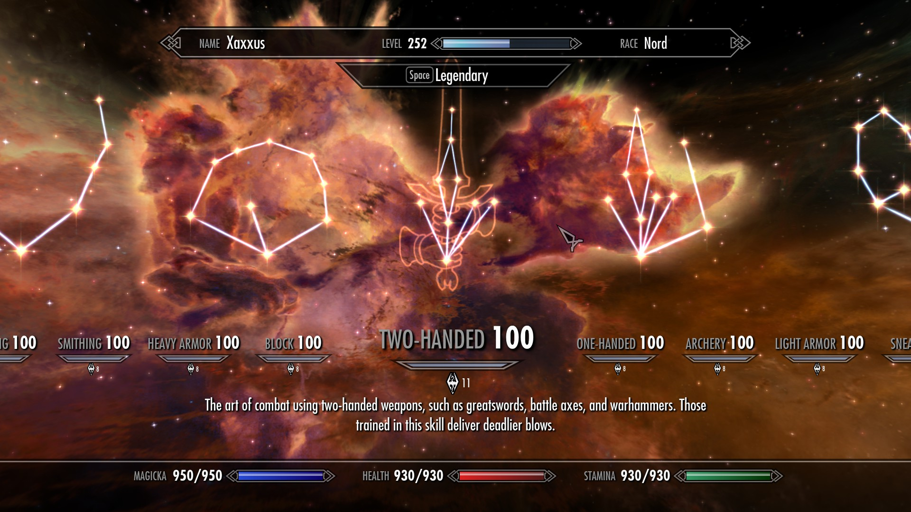

Mapa y árbol de habilidades

Principales ciudades
El mapa de Skyrim es inmenso y está lleno de ruinas, cuevas y mazmorras que explorar. Es por ello que hablar de todas ellas es prácticamente imposible. Es mejor que explores el mapa a tu ritmo para que no te sientas abrumado con la cantidad de cosas por hacer. En lugar de hablar de cada lugar, en este apartado me centraré en describir las principales ciudaddes, que son los centros neurálgicos de Skyrim, y son los lugares donde te otorgarán la mayoría de misiones.

Carrera Blanca
Ciudad central de Skyrim y sede de Los Compañeros, un grupo de guerreros mercenarios que velan por la seguridad de la ciudad y realizan trabajos en todo Skyrim. Es probablemente la primera ciudad a la que llegue el jugador. Aún no ha decidido bando en la guerra civil, y está gobernada por el jarl Balgruuf el Grande.

Falkreath
Es una pequeña ciudad localizada en el sudoeste de Skyrim. El jarl que la gobierna es Siddgeir. Es famosa por su gran cementerio, dónde están enterrados muchos héroes famosos de la historia de Skyrim. Subsiste a base de la explotación forestal.

Hibernalia
Ciudad situada más al norte de Skyrim. Es famosa por ser la sede del Colegio de Magos, al cual se le acusa de haber producido el Gran Hundimiento, a través del cual más de la mitad de la ciudad se hundió en el mar. Es gobernada por el jarl Korir.

Lucero del Alba
Se encuentra en la parte septentrional de Skyrim y dispone de dos minas funcionales: una de hierro y otra de azogue. La primera vez que el jugador llegue a la ciudad, será informado de que toda la ciudad está sifriendo terribles pesadillas, y le pedirán que investigue la causa. Está gobernada por el jarl Escaldo.

Soledad
Capital del Imperio en Skyrim y sede de sus fuerzas militares. Es uno de los puntos comerciales más importantes de Skyrim. En ella está ubicada el Colegio de Bardos, una facción menor. Si el jugador desea unise a la legión imperial, deberá venir a esta ciudad. Está gobernada por la jarl Elisif, La Justa.

Markarth
Se encuentra de la región más al oeste de Skyrim. Está asentada sobre las ruinas de una ciudad dwemer, por lo que su arquitectura es muy peculiar. Es el principal centro minero de Skyrim, por ello está muy disputada en la guerra civil. Actualmente está gobernada por el jarl Igmund. Recibe constantes ataques de los nativos de la Cuenca, que fueron expulsados de sus tierras por la guerra civil.

Riften
Es una ciudad situada en la esquina inferior derecha del mapa. Es famosa por ser la sede del Gremio de Ladrones, aunque nadie sabe muy bien en que parte de la ciudad está situado. Es por ello que es el centro del contrabando de la región, y la gente que vive allí está expuesta a continuos robos. Esta gobernada por la jarl Laila, La Legisladora.

Morthal
El pueblo se encuentra junto a un pantano, en la Marca de Hjaal, aislado del resto de regiones. Los aldeanos aseguran que a menudo ven extrañas luces y sombras en el pantano, y será la tarea del jugador averiguar que es lo que está pasando en el pueblo. Está gobernado por la jarl Idgrod Cuervo Viejo.

Ventalia
Finalmente tenemos a Ventalia. Es la capital del bando rebelde en la guerra civil. Pese a esto, los ciudadanos están aterrorizados por un asesino en serie que anda suelto, y además, hay rumores de que un niño está haciendo rituales extraños en una de las casas de la ciudad. Esta gobernada por el jarl Ulfric, Capa de la Tormenta.
Árbol de Habilidades

A medida que vayas jugando y haciendo misiones, recibirás experiencia que podrás usar para subir de nivel. Al subir de nivel podrás elegir si mejorar tu vida, tu magia o tu aguante. Además, recibirás un punto de habilidad que podrás usar para conseguir diversas mejoras en el combate o fuera de él, ya sea hacer más daño con espadas, hachas, etc, o conseguir mejores precios al vender cosas, mejorar la posibilidad de robo, etc. Cabe mencionar que se puede subir de nivel indefinidadmente, por lo que al final es posible conseguir todas las habilidades, pero a medida que se suba de nivel, se hace más difícil subir al siguiente, por lo que es recomendable elegir bien las habilidades que vas a seleccionar.
A continuación, una tabla con las diferentes habilidades desbloqueables en el juego, asociadas a su rol principal, con un enlace a la wiki de Skyrim en el que podrás consultar sus caracerísticas principales y los requisitos para desbloquearlas:
{kind=link}
{kind=link}